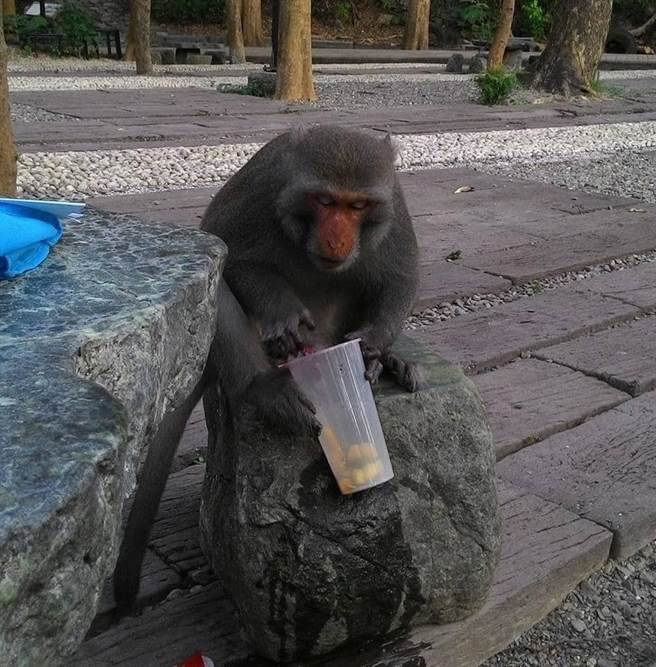
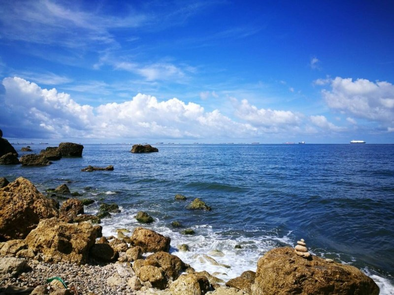
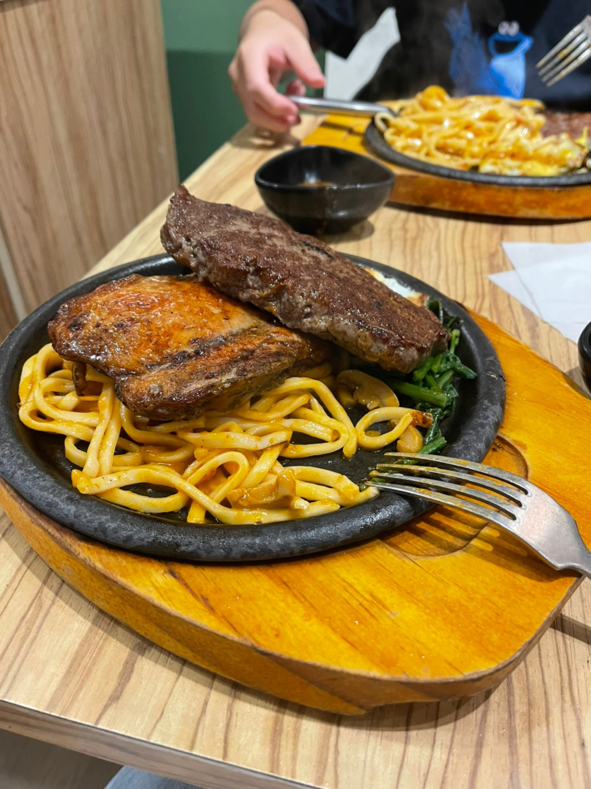
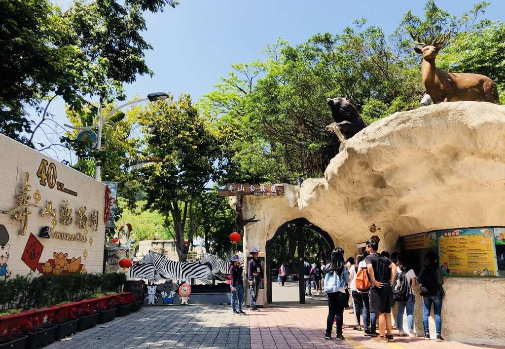
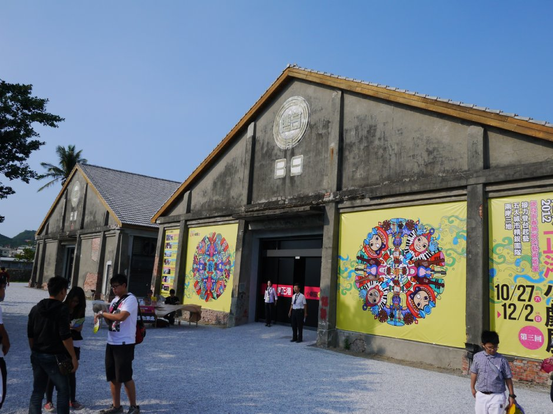
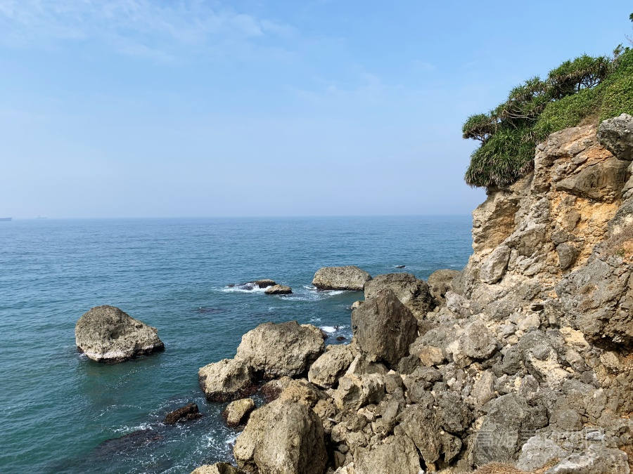
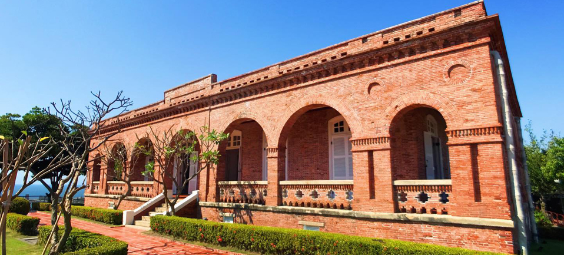

Two-Day Trip
Mornning：Mt.Chai Secret
When I arrived in Kaohsiung, it was ten o’clock in the morning. First of all, I went to Far Eastern to go shopping. It was not until twelve o’clock that I leaved for Mt.Chai Secret. There were lots of monkeys near Mt.Chai Secret, and I fed some banana
which I bought in the supermarket on the way to Mt.Chai Secret. That was interesting!


Afternoon：Sea Cave
Before arriving in Kaohsiung, I had researched some information about Mt.Chai Secret, and I saw a special blog saying that the most ram place in Chai Mountain is the "Sea Cave", so I decided to go there and have some pictures. Going down the slope from
the path next to "Cape Coffee", walking about 5 minutes, and I saw a wonderful U-shaped sea erosion arch. I took lots of pictures with the sea erosion arch when the sea was at low tide.
Dinner：Having Steak
After visited Mt.Chai Secret, it was exactly the dinner time. I went to eat Megaport Steak House. I ordered a steak and added 40 dollars to have some cheese on it. The steak, stacked with lots of cheese on it, and the whole was full of frankincense and
salty cheese, which tasted so healing that eliminated tiredness throughout the day. The iron plate noodles was stir-fried, quite flavorful, with seasonal vegetables, and a soft-boiled egg. The surface of the cheese
was burnt, bringing out a burnt aroma. The whole was very stringy with consistency, soft taste. The store, which was located at No. 32, Wufu 4th Road, Yancheng District, Kaohsiung City, its meal was very delicious and
wonderful!


Stay：Ambassador Hotel
At night, I chose to stay in Ambassador Hotel in Kaohsiung. Hearing that it will be closed in January next year and there will be some discount , so I decided to book this hotel. There were two big mirrors in the bathroom, even a tub. I took a bath after
taking the shower, and that relieved my stress!
Next morning, I woke up at seven a.m. and went downstair to have a breakfast that the hotel provided. There were a variety of food, for example, curry, Danzi noodles … and so on. After finishing the meal, I decided to visit this website to find how could I leave for the High Speed Rail Station. Finally, the trip was ended. Thanks to this website, I had a wonderful experience visiting Kaohsiung!
Mornning：Shoushan Zoo
There are so many viewpoints near the Nsysu, and I saw this website have recommended several viewpoints, so I decided to be a backpacker and planned a trip to Kaohsiung. First I went to the Shoushan Zoo. There were more than 100 kinds of rare birds and
other animals from all over the world in the park, and I therefore took a lot of photos.


Afternoon：Lunch & The Pier-2 Art Center
In the afternoon, I went to have some special meal. I saw a special store that was called “Women’s dumplings”, which was located at No. 113-2, Qixian 3rd Road, Kaohsiung. There were only female waiters, and the meal was great, too! After finishing the
lunch, I went to The Pier-2 Art Center to see variety of artworks. It was unused warehouse before, but through the cooperation with artists and the government, it became a famous attraction in Kaohsiung. I also took
lots of photos. Because Hamasen Station was nearby, after finishing the journey to The Pier-2 Art Center, I went to the Hamasen Taiwan Railway Museum. The ticket was about 200 dollars, and there were stories inside
the museum.
Dinner：Reverse Thick Toast
I chose Reverse Thick Toast to be my dinner. I ordered a thick toast with chocolate flavor, and a fried instant noodles.


Stay：Hamasen Homestay
At night, through this website recommended, I booked the Hamasen Homestay. It was near the Hamasen Taiwan Railway Museum, and it was a ideal place to experience the local culture. Next morning I visited the Wude Tample to pray that hoped everything will
be fined next year, then I finally finished this memorable trip.
Next morning, I went to SHIN KONG MITSUKOSHI to buy some fashional clothes and shoes. Because it was near the High Speed Railway Station, so I strolled in the department store until my train arrived.
One Day Trip

Breakfast：Wharf Omelet
Today I came to Kaohsiung for a day trip near NSYSU. Breakfast was indispensable in a beautiful morning. Our breakfast choice was the 40-year-old wharf omelet. The special old-fashioned flour omelette tasted soft and fragrant , the omelette was thick
and full of weight. Watching the aunt struggling to fry the powder in the big pot was also healing.
Morning Activity：The Pier-2 Art Zone
The next stop I came to the Pier-2 Art Zone. The Pier-2 Art Zone had three main parts, namely Dayong Warehouse and Penglai Warehouse And the Dayi Warehouse, each had different characteristics, but the same level of excitement, although the Pier 2 Pagoda
of the Dayong Warehouse looked different, it was still high. However, the landscape above was breath-taking. The port, Cijin and the 85th Building were all in sight. The installation art of the Penglai installation
also floated in my mind. The oversized suitcases, speakers and robots were all impressive. I found it novel, and the installation art of Dayi Warehouse called Peeing Boy was made of mosaic collage walls and faucets.
The faucets sprayed water from time to time. I didn’t know that I was almost sprayed when I took pictures. These three were my refutation 2 . The impression of the Art Special Zone was that the Pier-2 Special Zone was
very large, and every visitors spent half a day visiting it.


Lunch：Wanquan Meatballs
Then I went to eat Wanquan Meatballs at noon. This restaurant had been in business for 60 years. It was cheap and delicious. The meatballs were soft and sticky but tasted great. The store made its own sauce and garlic, and the overall taste was even better.
The rice cake was Q-bomb. After eating enough, I went to the nearby Fuquan Snowflake Ice Shop to eat ice to cool off the heat.
Afternoon Activity：Chaishan
After filling my stomach, I first came to the secret place of Chaishan. A section of the road was considered a small exercise after dinner. After arriving, it seemed to have come to a paradise. It had not been contaminated by the world at all. The beauty
of nature, strange rocks, a straight coastline and the endless sea, how wonderful it would be to live in this place, It was a pity that the people around me brought me back to reality in an instant. All in all, when
you come near Sun Yat-sen University, you must visit the secret place of Chaishan.


Evening：British Consulate
Later, I went to the residence of the British Consulate in Dagou. As the first residence of a foreign consulate in Taiwan, the overall building had a long history. , but the design was excellent, there was some afternoon tea to drink, so we drank fruit
tea and enjoyed the sunset of Shiziwan, and had Chaoyue cold noodles for dinner, delicious Korean cuisine, summed up the day was quite fulfilling, if there was a chance, I hope Learn more about the area.
Morning Activity：British Consulate
After visiting this website, I was deeply attracted to the delicious food and dessert on the web page. So I decided to go to Kaohsiung to verify whether the food on the website was really great or not. In the beginning, when I arrived at Kaohsiung, it
was seven thirty in the morning, so I decided to have a breakfast first. I ate casually because I wanted to have a space to eat more when I went to another place.After finishing the breakfast, I went to Former British
Consulate at Takao. It was near the Nsysu. When I first came into the consulate, I saw lots of wax figures and historical relics. That was fresh to me.


Lunch：Yancheng Wu’s Tofu Pudding
Two hours later, I was a little hungry, so I made up my mind to eat Yancheng Wu’s Tofu Pudding and Yancheng Lee 2 Donut.
Evening：Dream Mall
After eating my wonderful afternoon tea, it was time to go to another new place. I decided to go to Dream Mall to go for a 3 hours shopping. When I walked out the gate, it was about the dinner time. Reverse Thick Toast was my first choice, the thick toast
was so delicious that I considered it as the most popular food in that store. Finally, after finishing the dinner, my one day trip was ended successfully.